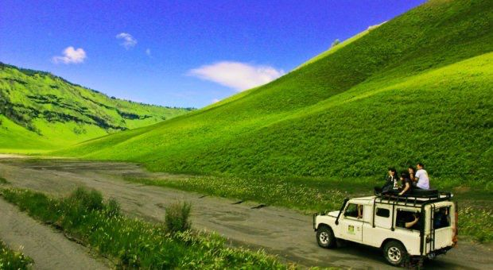

Destinasi Gunung Bromo

Gunung Bromo
Gunung Bromo adalah salah satu destinasi wisata alam paling terkenal di Indonesia yang terletak di Jawa Timur. Dikenal dengan pemandangan matahari terbitnya yang menakjubkan, Bromo menawarkan pengalaman wisata yang memadukan keindahan alam, budaya Tengger, dan suasana pegunungan yang sejuk..